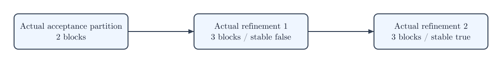
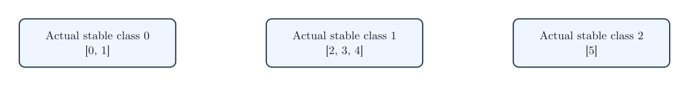
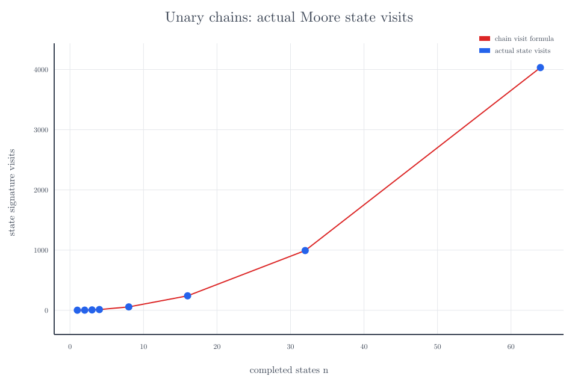
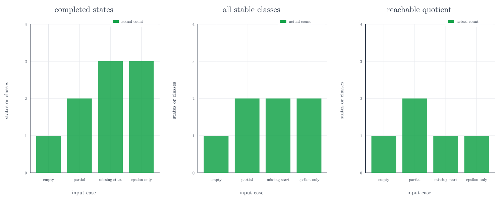

Moore DFA minimization
Abstract
Replace a deterministic finite automaton by a smaller machine recognizing exactly the same finite words. Moore refinement separates states whose acceptance or destination classes disagree. We inspect actual synchronous signatures, retain the original six-state automaton, and distinguish completed-state classes from the reachable minimal quotient. Native product-automaton comparison checks language equality for all finite words.
Derive synchronous distinguishability refinement
Initially group accepting and rejecting states. These classes distinguish the empty word. At each round, give state q the signature consisting of its old class followed by the old classes of its destinations in symbol order. Group equal signatures, assigning new IDs by first state encounter. All signatures use the same old labels, so the round is synchronous.
Induction shows that after t refinements, equal classes agree on acceptance of every word of length at most t. Including the old class in each signature prevents merging, so classes only split. When the number of classes stops growing, the partition is unchanged up to label renaming and is a transition congruence: induction on arbitrary word length proves language agreement within each class. Different final classes have a finite distinguishing word inherited from an earlier split. Removing unreachable quotient classes then gives the minimal reachable machine.
The native API first validates and completes missing moves or a missing start with a rejecting sink. It refines all completed states, including unreachable ones, then numbers the reachable quotient by ascending-symbol breadth-first search. Internal block IDs and returned state IDs are different numbering systems.
A three-state unary chain
For words over symbol0, states0,1,2 count progress toward acceptance at state2, which loops. The initial labels put0,1 together and2 separately. One refinement separates0 from1 because their destinations have different old labels. A second stable pass confirms the partition. The next diagram reads actual block counts and the table prints every actual produced signature.
#include <dm/dm.hpp>
int main() {
std::filesystem::create_directories("build");
auto t =
dm::algorithms::moore_minimize_trace(dm::algorithms::moore_chain_dfa(3));
dm::graphics::Diagram d;
d.node("initial", {0, 0}, "Actual acceptance partition\n2 blocks");
std::string previous = "initial";
std::print("| actual round | state | actual old signature | new block | stable pass |\n| ---: | ---: | " "--- | ---: | --- |\n");
for (std::size_t i = 0; i < t.rounds.size(); ++i) {
auto &r = t.rounds[i];
for (std::size_t q = 0; q < r.after.size(); ++q)
std::print("| {} | {} | {} | {} | {} |\n", i + 1, q,
r.signatures[q], r.after[q], r.stable);
auto id = std::to_string(i);
d.node(id, {6.0 * (i + 1), 0},
std::format("Actual refinement {}\n{} blocks / stable {}", i + 1,
r.blocks_after, r.stable)).edge(previous, id);
previous = id;
}
d.save_svg("build/moore_tiny.svg");
}| actual round | state | actual old signature | new block | stable pass |
|---|---|---|---|---|
| 1 | 0 | [0, 0] | 0 | false |
| 1 | 1 | [0, 1] | 1 | false |
| 1 | 2 | [1, 1] | 2 | false |
| 2 | 0 | [0, 1] | 0 | true |
| 2 | 1 | [1, 2] | 1 | true |
| 2 | 2 | [2, 2] | 2 | true |

Retain the original six-state automaton
The original two-symbol DFA has transition rows(1,2),(0,3),(4,5),(4,5),(4,5),(5,5), start0 and accepting states2,3,4. Its actual stable classes are{0,1},{2,3,4},{5}, yielding a three-state reachable quotient. The class diagram below displays native final member lists rather than drawing a guessed automaton.
The original report compared words only through length five. The native product-automaton equivalence check now explores every reachable pair: no pair with different acceptance proves equality for all finite words, while a differing pair would supply a shortest witness. This strengthens the finite test without treating a short word sample as a language proof. The actual quotient transition table is printed separately from internal classes.
#include <dm/dm.hpp>
int main() {
std::filesystem::create_directories("build");
auto source = dm::algorithms::moore_demo_dfa();
auto t = dm::algorithms::moore_minimize_trace(source);
auto equivalent = dm::algorithms::dfa_equivalence(source, t.run.result);
dm::graphics::Diagram d;
for (std::size_t b = 0; b < t.run.blocks.size(); ++b)
d.node(std::to_string(b), {6.0 * b, 0},
std::format("Actual stable class {}\n{}", b, t.run.blocks[b]));
std::print("Original states: {}. Reachable quotient states: {}. Exact language equality: {}. Product " "pairs examined: {}.\n\n| returned quotient state | accepting byte | symbol0 target | " "symbol1 target |\n| ---: | ---: | ---: | ---: |\n",
source.num_states, t.run.result.num_states,
equivalent.equivalent, equivalent.pairs_examined);
for (int q = 0; q < t.run.result.num_states; ++q)
std::print("| {} | {} | {} | {} |\n", q, int(t.run.result.accept[q]),
t.run.result.delta[q][0], t.run.result.delta[q][1]);
d.save_svg("build/moore_original.svg");
}Original states: 6. Reachable quotient states: 3. Exact language equality: true. Product pairs examined: 6.
| returned quotient state | accepting byte | symbol0 target | symbol1 target |
|---|---|---|---|
| 0 | 0 | 0 | 1 |
| 1 | 1 | 1 | 2 |
| 2 | 0 | 2 | 2 |

Check a refinement-depth family
For a unary n-state chain ending in one accepting loop, every state has a different distance to acceptance. Each proper refinement peels off the next predecessor. For n at least2, n−2 proper growth passes are followed by one stable pass, giving n−1 total rounds. The singleton needs one stable pass. Actual state visits are n times the number of rounds, and transition reads are the same because the alphabet has one symbol.
The finite sweep verifies these exact selected-work counts. Ordered vector-key maps add lexicographic and tree-comparison work; the full implementation therefore has a conservative O((k+1)*n squared*log(n+1)) bound, rather than inferring total runtime from state visits alone. Ordinary driver/output storage is O(n*(k+1)); optional captured round history can be quadratic in n or larger with alphabet size.
#include <dm/dm.hpp>
int main() {
std::filesystem::create_directories("build");
std::vector<double> x, visits, formula;
std::print("| chain states | actual quotient states | actual rounds | actual state visits | exact visit " "formula | actual transition reads | map comparisons |\n| ---: | ---: | ---: | ---: | ---: | " "---: | ---: |\n");
for (int n : {1, 2, 3, 4, 8, 16, 32, 64}) {
auto r =
dm::algorithms::moore_minimize_run(dm::algorithms::moore_chain_dfa(
n));
auto expected = n * std::max(1, n - 1);
x.push_back(n);
visits.push_back(r.work.state_visits);
formula.push_back(expected);
std::print("| {} | {} | {} | {} | {} | {} | {} |\n", n,
r.result.num_states, r.work.rounds, r.work.state_visits,
expected, r.work.transition_reads, r.work.map_comparisons);
}
auto p = dm::graphics::RPlot::create();
p.line(x, formula, "chain visit formula", {220, 38, 38}, 2).points(
x, visits, "actual state visits", {37, 99, 235}, 6).title(
"Unary chains: actual Moore state visits").x_label("completed states n").y_label("state signature visits").save_svg("build/moore_scaling.svg");
}| chain states | actual quotient states | actual rounds | actual state visits | exact visit formula | actual transition reads | map comparisons |
|---|---|---|---|---|---|---|
| 1 | 1 | 1 | 1 | 1 | 1 | 0 |
| 2 | 2 | 1 | 2 | 2 | 2 | 4 |
| 3 | 3 | 2 | 6 | 6 | 6 | 20 |
| 4 | 4 | 3 | 12 | 12 | 12 | 44 |
| 8 | 8 | 7 | 56 | 56 | 56 | 258 |
| 16 | 16 | 15 | 240 | 240 | 240 | 1330 |
| 32 | 32 | 31 | 992 | 992 | 992 | 6654 |
| 64 | 64 | 63 | 4032 | 4032 | 4032 | 32706 |

Completion, missing starts and unreachable classes
A partial accepting one-state machine with a missing transition needs a rejecting sink and two quotient states. A missing start denotes the empty language even if explicit states accept; completion adds a rejecting start and the reachable quotient is one rejecting state. With no symbols, only the empty word matters. The controls below separate the number of completed states, all stable classes and returned reachable states, so unreachable refinement work is not confused with minimal output size.
Projected state and transition caps include any added sink and are checked after complete validation but before completion copies. Analysis/trace defaults are100000 states and1000000 transitions, zero disables. The legacy ordinary function disables these optional policies. Trace units count initial labels plus each actual round record, before/after labels, signature rows and their integers: n initially, then1+3n+n*(k+1) per round. Default history cap1000000, zero disables. Whole-round admission precedes history copies; working maps and ordinary run output are outside this logical cap, which is not a byte or peak-memory bound.
#include <dm/dm.hpp>
int main() {
std::filesystem::create_directories("build");
using dm::algorithms::DFA;
std::vector<DFA> cases{DFA{}, DFA{1, 1, {{-1}}, 0, {1}},
DFA{2, 1, {{0}, {1}}, -1, {1, 0}},
DFA{3, 0, {{}, {}, {}}, 0, {1, 0, 1}}};
std::vector<std::string> labels{"empty", "partial", "missing start",
"epsilon only"};
std::vector<double> completed, classes, result;
std::print("| input case | actual completed states | actual stable classes | reachable quotient states " "| exact language equality |\n| --- | ---: | ---: | ---: | --- |\n");
for (std::size_t i = 0; i < cases.size(); ++i) {
auto r = dm::algorithms::moore_minimize_run(cases[i]);
completed.push_back(r.completed.num_states);
classes.push_back(r.blocks.size());
result.push_back(r.result.num_states);
std::print("| {} | {} | {} | {} | {} |\n", labels[i],
r.completed.num_states, r.blocks.size(), r.result.num_states,
dm::algorithms::dfa_equivalence(cases[i], r.result).equivalent);
}
auto layout = dm::graphics::RLayout::create(1, 3);
for (auto &entry : std::vector<std::pair<std::string, std::vector<double>> >{{"completed states", completed}, {"all stable classes", classes}, {"reachable quotient", result}}) {
auto p =
dm::graphics::RPlot::barplot(entry.second, labels, "actual count");
p.title(entry.first).x_label("input case").y_label("states or classes").y_limits(0, 4);
layout.add(p);
}
layout.size(1500, 600).fit_panels().save_svg("build/moore_controls.svg");
}| input case | actual completed states | actual stable classes | reachable quotient states | exact language equality |
|---|---|---|---|---|
| empty | 1 | 1 | 1 | true |
| partial | 2 | 2 | 2 | true |
| missing start | 3 | 2 | 1 | true |
| epsilon only | 3 | 2 | 1 | true |

Conclusion and references
Actual synchronous signatures explain every split and stable pass. The original machine reduces from six states to three, with exact product-language comparison replacing a bounded word sample. The chain family shows real refinement depth, while completion and reachability controls separate work over all states from the minimal reachable output. Numeric block labels are implementation identities, not semantic state names.
E. F. Moore (1956), Gedanken-experiments on sequential machines, in Automata Studies supplies the partition-refinement foundation. The ordered vector-key maps, sink completion, BFS quotient numbering and capture policy described here specify this native implementation.
Verification
This ten-report batch passes76 CTest cases,22 directly instrumented ASan/UBSan
cases,119 compiled and executed public examples,513/513 scoped documentation
definitions and ten representative clangd hovers. Independent Python Fraction
arithmetic and likelihood/mass reconstruction verify5266 captured records
with43990 checks, including the original Gaussian controls. Frozen valid-input
comparisons cover DFA quotients, byte recoding, event streams, interpolation,
tours, alignments, real-root paths, packing and nested-sampling trajectories.
Ten checkout headers and ten byte-identical installed development headers
compile independently; an installed-header native consumer links and runs. The
batch has42 executed complete programs and42 visually reviewed native figures,
with HTML/Markdown result and image-byte checks. These are scoped native checks,
not an installation claim for every language binding. Receipts:
build/mepml-conversion/batch-244-253/.